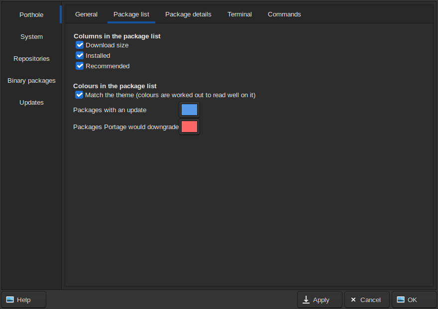
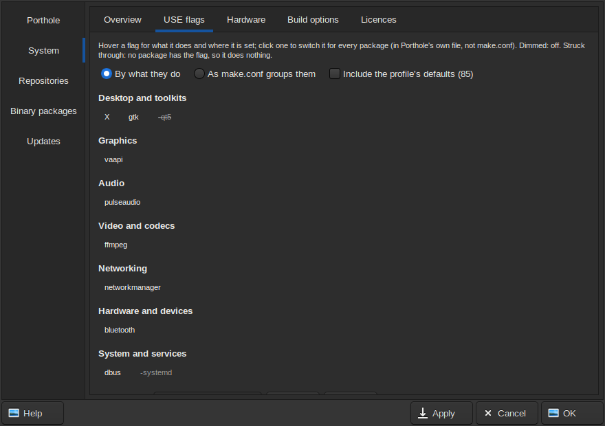
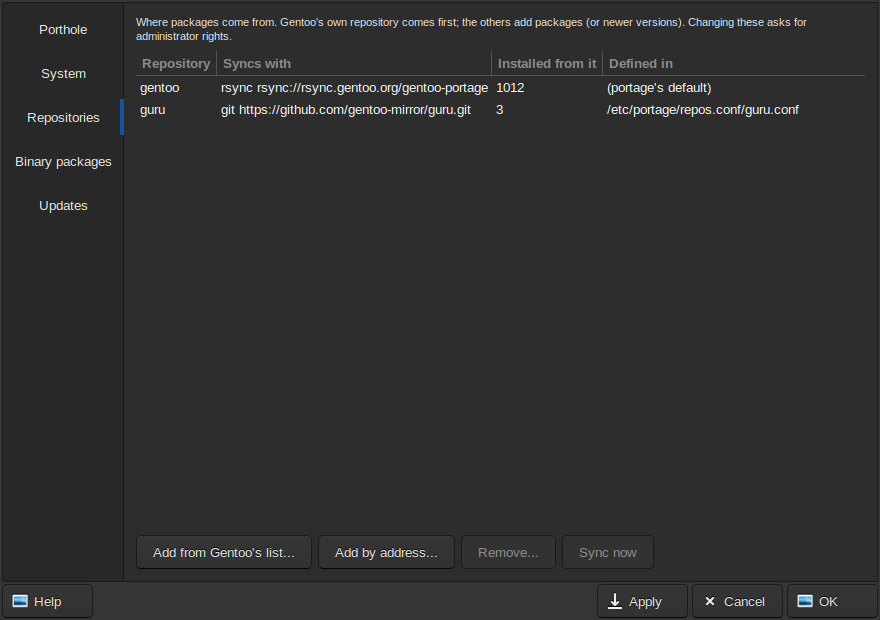
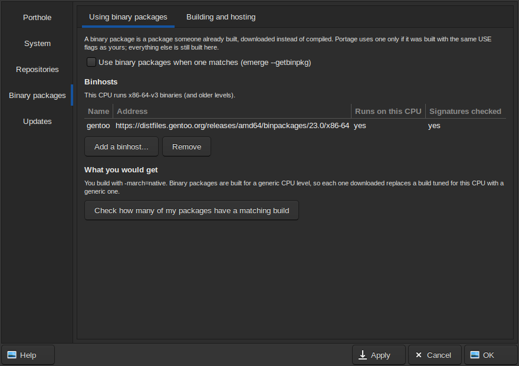
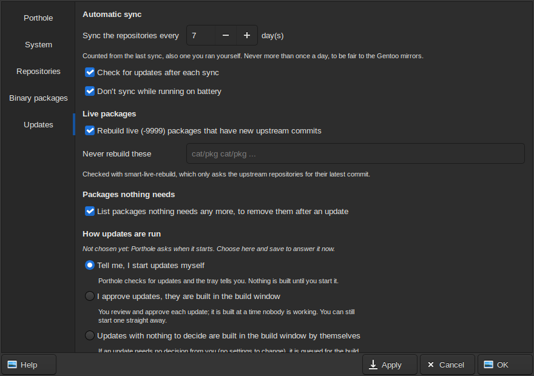

Open Settings from Porthole, Settings…. The first page, Porthole, is your own: how Porthole looks and behaves for you, saved without a password. The others are settings of the computer itself: changing them asks for the administrator password (unless Porthole is unlocked), and only what you changed is saved. Apply saves and keeps the window open; OK saves and closes it.
make.conf. What it
changes for you goes in files of its own, named so you can find them, each
undone by deleting it:
package.use/00-porthole-global (USE flags for every package),
package.license/00-porthole-licences (which licences are fine),
package.*/zz-porthole (changes for single packages, each with a
comment saying why), and one file per repository or binhost it added.

This computer's Portage setup, as it is written, with notes on what to
look at. Changes go in Porthole's own files, never in make.conf,
and each is previewed before it is made.
CPU_FLAGS_X86 compared with what the processor
really has, and MAKEOPTS compared with its threads and
memory. Change profile… lists the profiles you can switch to,
with warnings for the risky ones (changing the init system, switching to
no-multilib, to or from hardened).make.conf, by what it
does (Desktop, Graphics, Audio, Networking...), or as
make.conf groups them. Hover a flag for what it does and
where it is set; click it to switch it for every package. Include the
profile's defaults adds the flags your profile turns on.MAKEOPTS to Porthole: it
works out a safe value from this computer's threads and memory (one job
per 2 GB, at most one per thread) for emerge run by hand, keeps it
up to date, and writes it in its own files
(env/00-porthole-makeopts.conf,
package.env/00-porthole-makeopts), never in
make.conf. Porthole's own builds work it out again for
each build, counting the computers that help compile.make.conf and the profile say. Packages under
other licences are held back; Updates asks before accepting one for a
single package, and fully automatic updates never do.Changing USE flags, CPU flags or the profile shows a bar with Preview rebuild (works out what the change would rebuild, on a copy of the configuration, without changing anything), Apply and Discard. Apply saves the change, then opens Updates to work out the rebuild for you to review and start.

Where packages come from: each repository, how it syncs, how many installed packages came from it, and the file that defines it.
eselect repository offers them), marked official or
community. Gentoo doesn't check what community repositories contain: add
only ones you trust.
A binary package is one someone already built, downloaded instead of compiled. Portage uses one only if it was built with your USE flags; everything else is still built here.
-march=), each downloaded package
replaces a tuned build with a generic one.